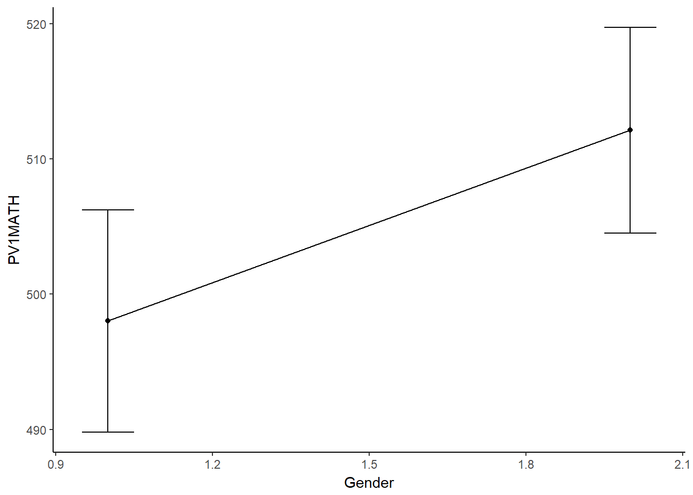
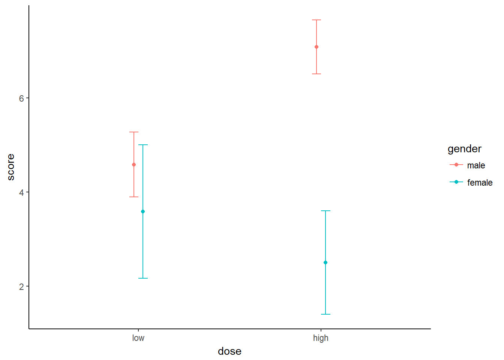

Usalduspiiridega jooniseid saab teha ka paketiga “ggplot2”. Selleks tuleb aga enne joonise tegemist arvutada usalduspiiride väärtused. Andmed
library(Rmisc) #sisaldab funktsiooni summarySE
pld <- summarySE(pisa, measurevar="PV1MATH", groupvars=c("Gender")) #teeme uue objekti, sest tahame seda kasutada hiljem joonise tegemiseks
pld## Gender N PV1MATH sd se ci
## 1 1 345 498.0201 77.59233 4.177431 8.216522
## 2 2 401 512.1252 77.33138 3.861745 7.591852library(ggplot2)
# Standard error of the mean
ggplot(pld, aes(y=PV1MATH,x=Gender)) +
geom_errorbar(aes(ymin=PV1MATH-se, ymax=PV1MATH+se), width=.1) +
geom_line() +
geom_point()+
theme_classic() 
pld <- summarySE(drugtrial, measurevar="score", groupvars=c("gender","dose"))
pld## gender dose N score sd se ci
## 1 male low 12 4.583333 1.0836247 0.3128155 0.6885023
## 2 male high 12 7.083333 0.9003366 0.2599048 0.5720466
## 3 female low 12 3.583333 2.2343733 0.6450080 1.4196531
## 4 female high 12 2.500000 1.7320508 0.5000000 1.1004926# Standard error of the mean
ggplot(pld, aes(y=score, x=dose, colour=gender)) +
geom_errorbar(aes(ymin=score-se, ymax=score+se), width=.1) +
geom_line() +
geom_point()+
theme_classic() ## geom_path: Each group consists of only one observation. Do you need to
## adjust the group aesthetic?